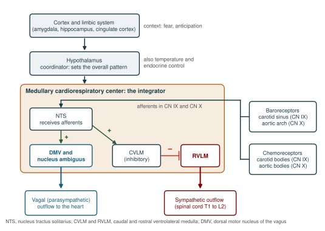
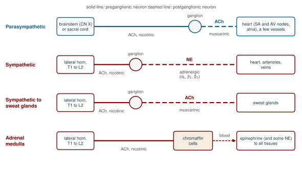
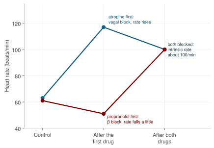
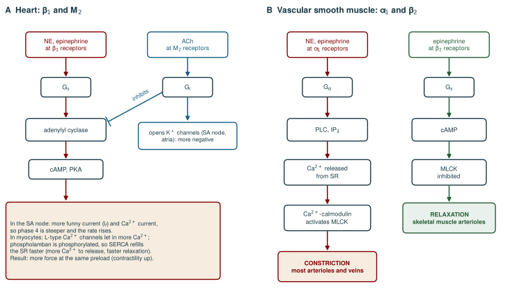
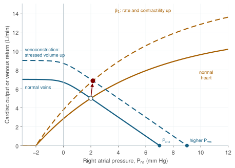
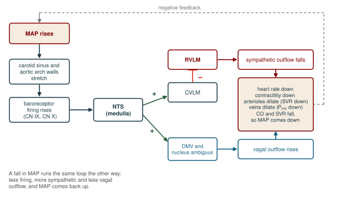
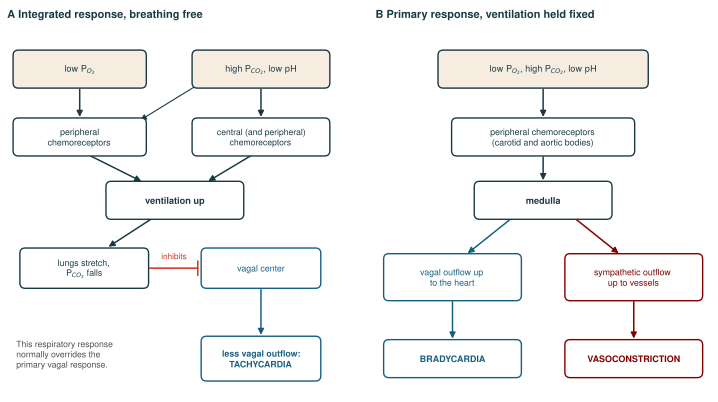

10 ANS and Extrinsic Control
How the nervous system sets heart rate, contractility and vascular tone
- Describe the control hierarchy: the hypothalamus as coordinator, the medullary cardiorespiratory center (NTS, DMV, RVLM, CVLM) as integrator, and the limbic system as context.
- Compare sympathetic and parasympathetic pathways: where the neurons start, where they synapse, and which transmitter and receptor each step uses, including the sweat gland and adrenal medulla exceptions.
- Explain how β1 and M2 receptors change heart rate, AV conduction and contractility.
- Predict whether adrenergic signaling constricts or dilates a vessel from the receptor it acts on (α1 or β2), and explain how venous tone changes stressed volume and Pms.
- Trace the baroreceptor reflex from stretch of the carotid sinus to the change in heart rate and vascular tone.
- Explain why the chemoreceptor reflex slows the heart when ventilation is fixed but speeds it in a person who is breathing.
- Name the extrinsic factors, from other organ systems, that also act on the circulation.
Names, dates and the exact values in figure captions are context, not things to memorize.
Every tissue controls its own arterioles. The Microcirculation and Local Control chapter showed how myogenic, metabolic and endothelial mechanisms match local blood flow to local need, minute to minute. Local control cannot defend the whole circulation, though. If every bed dilated at once, arterial pressure would fall and the brain and heart would lose their perfusion pressure. The circulation is a set of parallel beds fed by one pump, so something has to set cardiac output, hold mean arterial pressure (MAP) steady, and decide which beds get the cardiac output when there is not enough to go around. That is the job of the autonomic nervous system (ANS), with help from hormones and other organ systems. The Control of Cardiac Output chapter showed what moves cardiac output: Pms, contractility, heart rate and SVR. This chapter shows how the nerves move them. It covers the efferent side first (what the nerves do to the heart and vessels), then the afferent side (the sensors and the reflexes they drive), then a preview of extrinsic control.
10.1 The control hierarchy
Higher centers and the medulla together shape autonomic output to the circulation (Figure 10.1).

The hypothalamus is the coordinator. It sits below the thalamus, above the pituitary, and takes input from the retina, cortex, striatum, amygdala, hippocampus and spinal cord. It sets broad autonomic patterns and links cardiovascular responses to temperature control and endocrine output. It is a relay that sets the pattern, not the controller that adjusts each beat.
The limbic system provides context. The amygdala, hippocampus and cingulate cortex supply the emotional reasons to act: fear, anxiety, anticipation. That is why your heart rate rises before an exam starts, with no change in posture or blood volume.
The medullary cardiorespiratory center is the integrator. (The slide figures label it the medullary cardiovascular control center.) Clusters of neurons in the medulla (and lower pons) receive the afferent signals from the baroreceptors and chemoreceptors, combine them with input from higher centers, and set sympathetic and parasympathetic outflow in real time. The course names these nuclei:
| Nucleus | Role |
|---|---|
| Nucleus tractus solitarius (NTS) | Receives the afferents in CN IX and CN X. The first stop for baroreceptor and chemoreceptor signals. |
| Dorsal motor nucleus of the vagus (DMV) | Parasympathetic (vagal) output. The nucleus ambiguus, in the ventrolateral medulla, sends most of the vagal fibers to the heart. |
| Rostral ventrolateral medulla (RVLM) | Tonically active. Drives the sympathetic preganglionic neurons in the spinal cord. |
| Caudal ventrolateral medulla (CVLM) | Inhibitory. When the NTS excites it, it turns the RVLM down. |
The wiring explains the direction of the baroreflex. The NTS does not inhibit the RVLM directly. It excites the CVLM, and the CVLM inhibits the RVLM. So when the NTS gets more afferent traffic, sympathetic outflow falls. At the same time the NTS excites the vagal neurons, so parasympathetic outflow rises.
10.2 Efferent pathways
Both divisions of the ANS use two neurons in series between the central nervous system and the target. The first, the preganglionic neuron, has its cell body in the brainstem or spinal cord. It synapses in a ganglion on the second, postganglionic neuron, which runs to the target. At every autonomic ganglion, the preganglionic neuron releases acetylcholine (ACh) onto nicotinic receptors. The divisions differ in where the ganglia sit and in what the postganglionic neuron releases (Figure 10.2).

10.2.1 Sympathetic
- Signals from the hypothalamus pass through the medullary center (the RVLM) and down the spinal cord to preganglionic cell bodies in the lateral horn (the intermediolateral column) of the thoracic and upper lumbar cord, T1 to L2.
- The preganglionic axons leave the cord with the ventral roots and enter the sympathetic trunk (the chain of ganglia beside the vertebral column). Most synapse in the chain ganglion at the level where they left the cord. Some run up or down the chain first, which is how the head and the pelvis get sympathetic fibers even though no preganglionic neurons sit in the cervical or sacral cord. The preganglionic neurons are short.
- The postganglionic neurons have their cell bodies in the chain ganglia (or, for the abdominal organs, in ganglia in front of the aorta) and send long axons to the target tissues, where they release norepinephrine (NE) onto adrenergic receptors (α1, α2, β1, β2).
Sympathetic postganglionic fibers to sweat glands are an exception: they release ACh onto muscarinic receptors (the skin’s circulation is covered in Other Special Circulations). And in the adrenal medulla, preganglionic fibers end directly on chromaffin cells, which act as modified postganglionic neurons and release epinephrine (with a little NE) into the blood. Sympathetic activation is therefore both a nerve signal to specific targets and a hormone signal to every tissue with adrenergic receptors.
10.2.2 Parasympathetic
- Signals from the hypothalamus reach preganglionic neurons in the brainstem nuclei and the sacral cord (the craniosacral outflow).
- The preganglionic axons are long. They run all the way to ganglia in or next to the target organ. About 75% of all parasympathetic outflow travels in the vagus nerve (CN X).
- The postganglionic neurons are short. They release ACh onto muscarinic receptors on the target.
| Sympathetic | Parasympathetic | |
|---|---|---|
| Preganglionic cell bodies | Lateral horn, T1 to L2 | Brainstem (mostly CN X) and sacral cord |
| Ganglia | Sympathetic trunk (and prevertebral ganglia), near the cord | In or near the target |
| Preganglionic neuron | Short; ACh on nicotinic receptors | Long; ACh on nicotinic receptors |
| Postganglionic neuron | Long; NE on adrenergic receptors | Short; ACh on muscarinic receptors |
| Exceptions | Sweat glands (ACh, muscarinic); adrenal medulla (epinephrine into blood) |
The receptors are G protein-coupled (Membrane Potentials and Excitable Cells explains what that means). The table of receptors, G proteins and second messengers (Gs and cAMP, Gi, Gq and IP3) is in Smooth Muscle. This chapter uses them without the detail.
10.3 Autonomic control of the heart
Sympathetic and parasympathetic fibers reach the heart through the cardiac plexus, a web of nerves at the base of the heart. Sympathetic preganglionic neurons in the upper thoracic cord synapse in the cervical and upper thoracic chain ganglia (including the stellate ganglion), and the postganglionic fibers run in the cardiac nerves to the plexus and on to the SA node, the AV node and the working myocytes of the atria and ventricles. Vagal preganglionic fibers run to the plexus and synapse on postganglionic neurons on the heart itself, mostly near the SA and AV nodes and in the atria.
The nerves act on:
- the SA node, which sets heart rate;
- the AV node, which sets how fast the impulse passes from atria to ventricles;
- the myocytes, where sympathetic input sets contractility.
10.3.1 Heart rate
The SA node fires slow-response action potentials. Phase 4 is a slow depolarization driven mostly by the funny current (If, a mixed Na+/K+ cation current through HCN channels, carried mainly by inward Na+ at diastolic potentials) and then by T-type and L-type Ca2+ current. When the membrane reaches threshold, the L-type Ca2+ current produces the upstroke. The time it takes to get from the most negative potential to threshold sets the rate. The EKG I: Ionic Basis chapter, later in the block, covers the ionic basis in full.
Sympathetic (β1). NE binds β1 receptors on SA node cells. Gs activates adenylyl cyclase and cAMP rises. cAMP increases If and the Ca2+ currents, so phase 4 is steeper and the cell reaches threshold sooner. The rate rises.
Parasympathetic (M2). ACh from vagal fibers binds M2 receptors and has two effects at the same time:
- It opens K+ channels. K+ conductance rises, the membrane moves toward EK, and each cycle starts from a more negative potential.
- Through Gi, it lowers cAMP. Less cAMP means less If, so the phase 4 slope flattens.
Both effects lengthen the time to threshold, and both slow the heart. The EKG I chapter draws both effects on the SA node action potential.
The peer-educator notes write the vagal effect as one chain: “ACh → muscarinic receptors → ↑ K+ efflux → ↓ cAMP → slower phase 4 slope.” That reads as if K+ efflux causes the fall in cAMP. It does not. The K+ channel effect and the cAMP effect run in parallel from the same receptor (course errata entry 21). The notes also say sympathetic input acts on “the sodium channels” in pacemaker cells. Those are the HCN channels, whose funny current is carried mostly by Na+, not the fast Na+ channels of working myocytes. cAMP also increases the Ca2+ currents.
The AV node. The same receptors act on the AV node, which is also a slow-response tissue. β1 stimulation speeds AV conduction and shortens the PR interval; M2 stimulation slows it and lengthens the PR interval. Strong vagal activity can block AV conduction for a beat or more. The AV node changes conduction, not rate.
In the SA and AV nodes the upstroke is carried by L-type Ca2+ current, not by fast Na+ current. So AV conduction depends on L-type Ca2+ channels: β1 stimulation, which increases L-type current, speeds it, and an L-type Ca2+ channel blocker slows it and lengthens the PR interval. A Na+ channel blocker does not slow the heart rate. It slows the upstroke of fast-response action potentials in atrial and ventricular muscle and in the Purkinje fibers, so it slows conduction there and widens the QRS.
10.3.2 Vagal tone dominates at rest
Both divisions are active all the time, but at rest the vagus wins. With no autonomic input at all, the SA node fires at its intrinsic rate, about 100/min. The normal resting sinus rate, 60 to 100/min and often 60 to 70 in a resting adult, sits below that because vagal tone holds it down.
The lecture shows this with a transplanted heart and with drugs. In a person with a heart transplant, the autonomic nerves to the heart are cut and do not reconnect, so the resting rate is near the intrinsic rate, about 100/min. And in healthy subjects, blocking each division with a drug shows how much each contributes (Figure 10.3). Atropine blocks muscarinic receptors and removes vagal tone: the rate jumps from about 63 to about 117/min. Propranolol blocks β receptors and removes sympathetic tone: the rate falls only from about 61 to about 51/min. With both blocked, in either order, the rate settles near 100/min.

10.3.3 Contractility
Contractility, or inotropy, is the intrinsic ability of the heart muscle to develop force at a given preload and afterload. It does not depend on loading. Greater contractility makes the end-systolic pressure-volume relationship steeper. Heart rate and relaxation are separate properties (course errata entry 2). Sympathetic stimulation raises contractility; this is the main reason sympathetic activity increases stroke volume at a given end-diastolic volume.
NE (or circulating epinephrine) binds β1 receptors on ventricular myocytes. Gs raises cAMP, and cAMP activates protein kinase A (PKA), which phosphorylates, among other proteins (Figure 10.4 A):
- L-type Ca2+ channels. More Ca2+ enters during the plateau, which triggers more Ca2+ release from the sarcoplasmic reticulum (SR).
- Phospholamban. Unphosphorylated phospholamban holds back SERCA, the pump that returns Ca2+ to the SR. Phosphorylation removes the brake. SERCA takes up Ca2+ faster, so the SR holds more Ca2+ to release on the next beat (stronger contraction) and the cytosol clears faster (faster relaxation, which helps preserve filling time at high heart rates).
The details of excitation-contraction coupling and phospholamban are in Cardiac Muscle.
ACh at M2 receptors does the reverse through Gi: cAMP falls, phospholamban is less phosphorylated, SERCA takes up less Ca2+, and force falls. Vagal fibers go mostly to the nodes and the atria, so vagal effects on force are strongest in the atria. There, ACh also opens the same K+ channels it opens in the SA node, which shortens the action potential and lets in less Ca2+. In the ventricles, the main thing ACh does is blunt the effect of whatever sympathetic stimulation is present.

10.4 Autonomic control of the vessels
Sympathetic nerves supply the smooth muscle of nearly all small arteries, arterioles and veins, and they are tonically active. Parasympathetic nerves supply only a few vessels (in the genitalia and the salivary glands), so the vascular half of autonomic control is almost entirely sympathetic. The capillaries have no smooth muscle and no nerves.
Sympathetic tone acts on veins and arterioles with different results:
- Veins (venous tone). Venoconstriction shrinks the unstressed volume of the veins and moves blood into the stressed volume. Stressed volume rises, so Pms (mean systemic filling pressure) rises, venous return rises, and preload rises. About 30% of venous volume can be mobilized this way. The Control of Cardiac Output chapter explained stressed volume and Pms.
- Arterioles (arterial tone). Arteriolar constriction raises SVR, which raises MAP and afterload. Constricting some beds while others stay open also redistributes cardiac output.
10.4.1 The receptor decides the response
“Sympathetic” does not mean “constriction.” What NE or epinephrine does to a vessel depends on which receptor its smooth muscle carries (Figure 10.4 B):
- α1 receptors couple to Gq. Phospholipase C makes IP3, IP3 releases Ca2+ from the SR, Ca2+-calmodulin activates MLCK, and the muscle contracts. α1 is the predominant receptor in most of the peripheral circulation, on arterioles and veins alike.
- β2 receptors couple to Gs. cAMP rises and inhibits MLCK, and the muscle relaxes. β2 receptors are plentiful on skeletal muscle arterioles.
The mechanism of smooth muscle contraction, and why MLCK is the switch, is in Smooth Muscle.
The two catecholamines do not reach these receptors equally. NE released from sympathetic nerves acts strongly on α1 and β1 receptors and weakly on β2. So sympathetic nerve activity constricts skeletal muscle arterioles, as it does arterioles elsewhere. Epinephrine from the adrenal medulla reaches every vessel through the blood and acts on β2 receptors as well. At the concentrations of a “fight or flight” response, it dilates skeletal muscle arterioles through β2 while it constricts the skin, gut and kidney through α1. That shift of flow toward muscle is the receptor distribution at work. During exercise, metabolic vasodilators add to it (Other Special Circulations).
The vascular-control slides show “Epinephrine / Norepinephrine” acting on α1 and β2 receptors and say “B2 present in muscle vasculature => Dilation.” The peer-educator notes go further and list “skeletal muscle vasodilation (β2)” as an effect of sympathetic nerves, and say NE “will cause dilation” in muscle. The β2 dilation in muscle comes from circulating epinephrine. Neural NE has little effect on β2 receptors, so sympathetic nerve stimulation constricts muscle arterioles through α1. Both versions agree that receptors set the response; the difference is which catecholamine reaches the β2 receptors.
The same slides show parasympathetic “(pelvic) M2 (vasodilation)” with “(Gut).” Parasympathetic vasodilation is limited to a few beds, such as the genitalia, and ACh dilates vessels by acting on muscarinic receptors on endothelial cells, which release nitric oxide. The gut circulation is under sympathetic, not parasympathetic, control (course errata entry 14; Other Special Circulations).
10.5 Putting the efferent side together
The lecture summarizes autonomic control with the arterial version of Ohm’s law, CO = (MAP − CVP)/SVR, rearranged with CVP left out and expanded:
\[\text{MAP} \approx \text{CO} \times \text{SVR} = (\text{HR} \times \text{SV}) \times \text{SVR} = \big(\text{HR} \times (\text{EDV} - \text{ESV})\big) \times \text{SVR}\]
Each term has an autonomic handle. Sympathetic and vagal input set HR. Venous return and the compliance of the ventricle set EDV, and venous tone sets venous return. Contractility sets how far the ventricle empties, ESV. Arteriolar tone sets SVR. Sympathetic activation raises HR, EDV and SVR and lowers ESV. Vagal activation lowers HR. In the baroreflex, vagal activation and sympathetic withdrawal happen together, so the changes all reverse.
MAP ≈ CO × SVR drops CVP. That is harmless when CVP is a few mm Hg, but when CVP is high, as in heart failure or tamponade, use SVR = (MAP − CVP)/CO, as in Peripheral Circulation and Hemodynamics.
The same summary can be drawn on the cardiac and vascular function curves (Figure 10.5). Sympathetic stimulation of the heart (rate and contractility) shifts the cardiac function curve up. Venoconstriction raises Pms and shifts the vascular function curve to the right. The new operating point has a higher cardiac output, while right atrial pressure (Pra) barely changes. These are the curves from the Control of Cardiac Output chapter.

10.6 Afferents and reflexes: the baroreceptors
The efferent nerves need information. The main sensors for the circulation are the arterial baroreceptors: stretch-sensitive nerve endings in the walls of the carotid sinus (a slight bulge where the internal carotid artery begins) and the aortic arch. Their afferent fibers run in the glossopharyngeal nerve (CN IX) from the carotid sinus and in the vagus nerve (CN X) from the aortic arch, and both end in the NTS.
The receptors sense stretch of the arterial wall, so they report pressure. When MAP rises, the wall stretches more, the nerve endings depolarize more, and their firing rate rises. When MAP falls, firing falls.
10.6.1 The baroreceptor reflex
The reflex is a negative feedback loop that holds MAP near its set point (Figure 10.6). Follow a rise in pressure:
- MAP rises and the carotid sinus and aortic arch stretch.
- Baroreceptor firing rises in CN IX and CN X.
- The NTS excites the CVLM, which inhibits the RVLM, so sympathetic outflow falls. The NTS also excites the vagal neurons, so vagal outflow rises.
- Heart rate falls (more vagal, less sympathetic), contractility falls, arterioles dilate (SVR falls), and veins dilate (stressed volume and Pms fall, so venous return falls).
- CO and SVR fall, and MAP comes back down.
A fall in pressure runs the loop the other way: less firing, less vagal and more sympathetic outflow, a faster and stronger heart, venoconstriction and arteriolar constriction, and MAP back up.

Standing up is the everyday test. Gravity pools blood in the leg veins, venous return falls, stroke volume and CO fall, and MAP starts to drop. Within a few beats the baroreceptors fire less, and the reflex raises heart rate and contractility, constricts the veins (which pushes blood back toward the heart) and constricts the arterioles. MAP is restored before you notice. When the efferent side fails, as in some neurologic disorders that damage autonomic nerves, standing drops the pressure and can cause fainting: orthostatic hypotension, the puzzle at the end of the Control of Cardiac Output chapter.
The baroreflex is fast and strong, but it is a short-term controller. The kidneys, previewed at the end of the lecture, set blood volume over days. In hemorrhage and heart failure, the baroreflex is what produces the compensation you see in the curves (Cardiovascular Integration and Adaptation).
10.7 Afferents and reflexes: the chemoreceptors
Chemoreceptors sense the chemistry of blood and brain fluid. Their main job is to control breathing (Control of Ventilation), but they also act on the heart and vessels.
- Central chemoreceptors, near the surface of the medulla, detect CO2 and pH. CO2 crosses into the brain fluid and lowers its pH.
- Peripheral chemoreceptors sit next to the baroreceptors. The carotid bodies, at the carotid bifurcation, detect O2, CO2 and pH and signal through CN IX. The aortic bodies, on the aortic arch, detect O2 and CO2 and signal through CN X.
10.7.1 Two responses to the same stimulus
Low PO2, high PCO2 or low pH activates the chemoreceptors, and what happens to the heart depends on whether the person can breathe (Figure 10.7).
The integrated response, breathing freely. In a person who can breathe, the chemoreceptors drive ventilation up: the peripheral chemoreceptors alone respond to low PO2, and both central and peripheral chemoreceptors respond to high PCO2 or low pH. The larger breaths stretch the lungs, and the extra ventilation lowers PCO2. Lung stretch and the lower PCO2 both inhibit the vagal center. The net effect is less vagal outflow and tachycardia, the usual result of hypoxia in daily life. The respiratory response normally overrides the peripheral “hypoxic” bradycardia described next.
The primary response, with ventilation fixed. If breathing cannot increase, the peripheral chemoreceptor reflex shows itself directly. It is unusual in using both divisions at once: it increases vagal outflow to the heart, which causes bradycardia, and increases sympathetic outflow to the vessels, which causes vasoconstriction. The lecture’s thought exercise is a patient who is not breathing during placement of a breathing tube. PO2 falls and PCO2 rises with no rise in ventilation, and the heart slows, sometimes sharply.

10.8 Extrinsic control: a preview
The lecture closes with a preview of the other organ systems that act on the circulation. Each gets its own lectures later.
- The lungs and chest. Each breath changes intrathoracic pressure. Inspiration lowers the pressure around the right atrium and the great veins, which draws blood toward the heart; positive pressure in the chest does the reverse.
- The kidneys. They set blood volume, and so Pms, by controlling salt and water excretion. They also release renin, which leads to angiotensin II.
- Hormones. Epinephrine from the adrenal medulla acts on β1 receptors in the heart and β2 receptors in muscle vessels, as above. Angiotensin II and vasopressin (antidiuretic hormone) constrict vessels and help the kidneys retain volume. Thyroid hormone raises heart rate and contractility.
- Temperature. The hypothalamus controls skin blood flow through sympathetic nerves to the skin’s vessels and sweat glands.
- Emotion and behavior. Limbic and hypothalamic signals change the baseline output of the medulla.
- Exercise. Sympathetic activation and local metabolic vasodilation act together (Cardiovascular Adaptation to Exercise).
10.9 Check your understanding
A patient with a transplanted heart has a resting heart rate of 98/min. Why is it higher than yours, and what does that tell you about the autonomic balance at rest in a normal heart?
Answer
The transplanted heart has no autonomic nerves, so it beats at the intrinsic rate of the SA node, about 100/min. A normal resting sinus rate, often 60 to 70/min in a resting adult, is lower than that, so at rest vagal tone outweighs sympathetic tone and holds the rate down.
ACh at M2 receptors slows the SA node by two separate mechanisms. Name them, and say which part of the action potential each one changes.
Answer
It opens K+ channels, which moves the membrane toward EK, so each cycle starts from a more negative potential. And it lowers cAMP through Gi, which reduces the funny current (If) and flattens the phase 4 slope. Both lengthen the time to threshold. The K+ effect does not cause the cAMP effect; they run in parallel.
A drug blocks α1 receptors and nothing else. Predict the effect on SVR, on Pms, and, before any reflex, on MAP.
Answer
α1 receptors carry most sympathetic constriction of both arterioles and veins. Blocking them dilates the arterioles, so SVR falls, and dilates the veins, so unstressed volume rises, stressed volume falls and Pms falls. With SVR down and venous return down, MAP falls. The baroreflex then raises heart rate through β1 receptors, which the drug does not block.
During a sudden scare, blood flow to the leg muscles rises while blood flow to the skin falls. Both beds receive the same sympathetic signal. Explain the difference.
Answer
The adrenal medulla releases epinephrine into the blood. Skeletal muscle arterioles have many β2 receptors, and epinephrine acting on them raises cAMP, inhibits MLCK and dilates the vessels. Skin arterioles have mainly α1 receptors, so epinephrine and neural NE constrict them. Neural NE alone would constrict both beds; the dilation in muscle comes from circulating epinephrine.
A drug constricts arterioles and veins through α1 receptors and has no direct action on the heart. MAP rises within a minute. Trace the reflex. Why does heart rate fall, and why does MAP come back down only part of the way?
Answer
The higher pressure stretches the carotid sinus and aortic arch, and baroreceptor firing rises in CN IX and CN X. The NTS excites the CVLM, which inhibits the RVLM, so sympathetic outflow falls, and the NTS excites the vagal neurons, so vagal outflow rises. At the SA node there is more ACh at M2 receptors and less norepinephrine at β1 receptors: K+ channels open, cAMP falls, phase 4 flattens, and the rate falls. The drug has no action on the heart, so the whole fall in rate comes from the reflex. The vascular arm of the reflex helps less than usual, because withdrawing sympathetic tone cannot relax vessels whose α1 receptors the drug is still activating. Most of the correction comes from the slower, weaker heart, and MAP stays above where it started.
A sedated patient stops breathing for two minutes. PO2 falls and PCO2 rises. Does the heart rate rise or fall, and why is this different from what happens at high altitude?
Answer
It falls. With ventilation fixed at zero, the peripheral chemoreceptor reflex acts alone: it increases vagal outflow to the heart (bradycardia) and sympathetic outflow to the vessels (vasoconstriction). At altitude the person can breathe. Low PO2 drives ventilation up through the peripheral chemoreceptors (the central chemoreceptors do not sense O2), and lung stretch and the lower PCO2 inhibit vagal outflow. The net response there is tachycardia.
10.10 Key equations
| Equation | Use |
|---|---|
| CO = (MAP − CVP)/SVR; MAP ≈ CO × SVR | Arterial pressure from flow and resistance (CVP ≈ Pra) |
| CO = HR × SV; SV = EDV − ESV | Where heart rate, venous return and contractility enter |
10.11 Sources
This chapter follows the 2026 Autonomic and Extrinsic Regulation lecture for MEDC 30504 and draws on the peer-educator notes and the course’s 2018 notes on autonomic regulation, corrected and updated. All figures were drawn for this book.